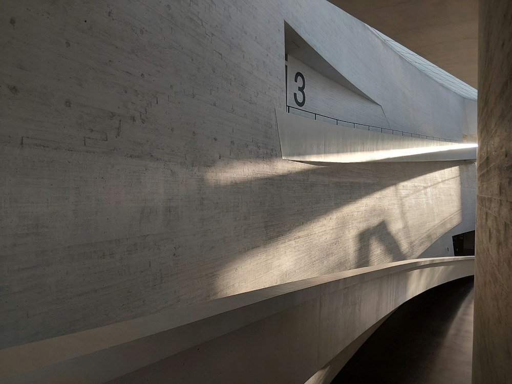

YENİ BİR DİJİTAL DENEYİM
Her ayrıntıda
bir anlam.
Güçlü bir kimlik, rahat bir deneyim ve fikirlerin için esnek bir başlangıç.
KeşfetNORA — TASARIM ÖNİZLEMESİ2026
01 / DENEYİM
Sadeliğin
gücü.
Görsel denge, okunabilirlik ve kolay gezinme. İçeriğin ne olacağına sen karar ver; tasarım ona alan açsın.
Tasarım hakkında
02 / HAKKINDA
İçeriğe hazır.
NORA geçici bir tasarım adıdır. Bu sayfa henüz bir ürün, kuruluş ya da hizmeti temsil etmiyor. İçerik belirlendiğinde görsel kimliği koruyarak düzenlenebilir.
Başa dön